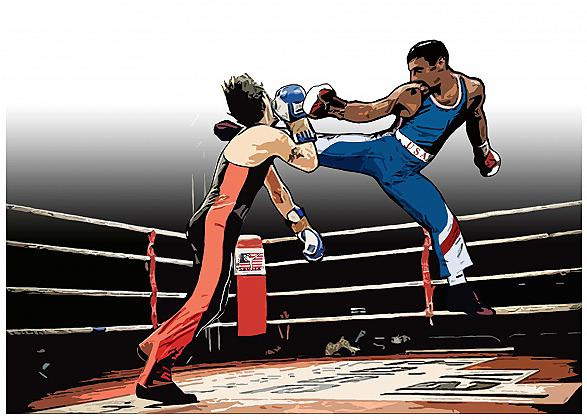

Il fouetté è uno dei calci più usati nei combattimenti. Le parti con cui si colpisce l'avversario sono la punta e il collo del piede. L'esecuzione del calcio prevede una fase di caricamento, nella quale il ginocchio viene portato verso l'alto, e una fase di distensione, nella quale si viene a contatto con il bersaglio. Per i fouetté portati al viso o allo stomaco il caricamento è più marcato, mentre per il fouetté basso il caricamento è minore e la gamba portante si flette leggermente. Questo colpo può essere doppiato, nel senso che, una volta portato il colpo, lo si può ripetere in modo molto rapido, senza riportare il piede a terra. Il fouetté basso portato con la gamba arretrata è un calcio molto efficace, così come i fouetté alti o allo stomaco portati con la gamba avanzata.
CLICCA SULL'IMMAGINE PER CAPIRE MEGLIO COME COLPIRELa tecnica di esecuzione dello chassé è simile al fouetté, ma la parte con cui si colpisce l'avversario è il tallone. Questo calcio, oltre che in fase d'attacco, è molto utile in difesa, dato che si può bloccare l'avversario durante l'esecuzione di un calcio; in questo caso è anche chiamato arresto. Gli chassé possono essere eseguiti anche saltati, oppure effettuando un passo in avanti con la gamba arretrata, che passa dietro alla gamba avanzata: in questo lo chassé diventa incrociato. Un particolare tipo di chassé è quello tornante: il colpo viene eseguito dopo una rotazione sulle punte, e viene portato con la gamba arretrata. Può essere eseguito in risposta a un fouetté dell'avversario, dopo averlo parato in modo tale da spazzare via la gamba dell'avversario.
CLICCA SULL' IMMAGINE PER CAPIRE MEGLIO COME COLPIREQuesto calcio viene eseguito con la gamba arretrata, colpendo la tibia dell'avversario col taglio del piede. Al momento dell'impatto, o anche leggermente prima, si può raccogliere il ginocchio ed eseguire un fouetté al viso: si tratta di una finta molto spettacolare ed efficace perché, se eseguita in modo molto rapido, disorienta l'avversario. Un altro colpo eseguito a partire dallo charlemont è la sforbiciata: al momento dell'impatto la gamba portante si solleva a eseguire un fouetté, mentre la gamba con cui in precedenza è stato eseguito lo charlemont diventa a sua volta gamba portante; il tutto viene eseguito con un salto.
CLICCA SULL' IMMAGINE PER CAPIRE MEGLIO COME COLPIREIl calcio consiste in un movimento circolare a gamba tesa per colpire al viso o spostare i guanti dal viso dell'avversario e poterlo colpire successivamente con un colpo di pugilato; l'avversario viene colpito con la punta o con il dorso del piede.
CLICCA SULL' IMMAGINE PER CAPIRE MEGLIO COME COLPIREè la competizione più diffusa e si sviluppa in tre riprese da un minuto e mezzo per i minorenni, laddove per i maggiorenni le riprese sono da due minuti; i tiratori sono tenuti a portare i colpi affondandoli leggermente. In caso di colpo non controllato, l'atleta interessato viene richiamato dall'arbitro; al terzo richiamo, il tiratore viene squalificato. Nonostante ciò, si tratta d'una competizione vera e propria, dove gli atleti sono portati a mostrare il meglio delle tecniche apprese cercando di lasciare il minor spazio possibile all'avversario. Il vincitore viene decretato dai giudici di gara, che valutano solo i colpi portati a segno e soprattutto lo stile dell'atleta. Attualmente le manifestazioni più importanti di assalt" sono i campionati mondiali, gli europei e il campionato di Francia, molto seguito a causa dell'elevato livello tecnico dei partecipanti.
il combattimento di seconda serie si sviluppa in tre riprese da due minuti. Il contatto è pieno e il KO valido. I tiratori indossano tutte le protezioni, come nell'assalto. Il vincitore dell'incontro viene decretato dai tre giudici ai lati del quadrato in base alla potenza e alla precisione dei colpi.
tipo di competizione non prevede l'uso di caschetto e paratibia, le riprese sono cinque; è riservato ad atleti esperti o professionisti.
la savate pro o chauss savate ha lo scopo di diffondere a livello mediatico questa disciplina. L'abbigliamento non è composto della tradizionale accademica, ma da pantaloni termici lunghi, torso nudo e scarpette da savate. A differenza della savate classica, si può colpire e parare anche con la tibia.
